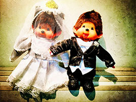

今天抓到一只蒙奇奇，就是这货。。 是不是萌出一脸血。 发了一下票圈儿，很多不认识他的朋友都问 他到底是个猴子还是猩猩还是刺猬还是小毛孩儿？ 小编也抱着好奇心顺便问了一下度娘 没想到这货也是红极一时都能与HelloKitty媲美了。 那我们来认识一下这只萌萌的猩猩刺猬小毛孩儿吧~ 1.他叫蒙奇奇其实是只猴子，出生于日本，它的前身是这种叫 KutaKuta Monkey 的猴子，意思是“累惨了的猴子”。 我真的相信他的前身是只猩猩了，哈哈哈 2.蒙奇奇的本名 Monchhichi，是怎么来的？据说 Mon 就是 Monkey 的 Mon，Chhichi 就是吸奶嘴的时候发出的“嗤嗤”声，合起来念还有 Monkey 的谐音。 他的创造者关口晃市先生，来看蒙奇奇的创造者关口晃市先生亲自卖萌。 3.蒙奇奇的标志性动作就是吮手指，在它诞生前一年就有个叫 GeGe 的吮手指娃娃很火了，然后才有了蒙奇奇~ KutaKuta 猴子~ GeGe 小姐~蒙奇奇~大家是不是发现了什么 4.那蒙奇奇为什么总在吮手指呢？说起来还有点心酸，上世纪 70 年代 正赶上日本经济飞速发展，那时候的爸妈都只想着赚钱，忽略了家庭。蒙奇奇就 代表了那个时代小朋友，失落无聊，只好自己吮手指。所以蒙奇奇的诞 生，是在鼓励爱和关怀。 各位大朋友们小朋友们，大家是不是小时候也喜欢把手指往嘴巴里面塞呢。 5.对了，这个毛嘟嘟的小猴子，其实和吴彦祖林志玲何炅汪涵周迅陈奕 迅杨千嬅等等人是同年生的噢。 等等····为嘛你们这个年龄的人都喜欢做这个动作~ 6.其实蒙奇奇不是只有一个角色的，出生的时候它们就是一对，Monchhichi Kun （男蒙奇奇）和 Monchhichi Chan（女蒙奇奇），靠围嘴颜色来区 分，表情也是一个哭一个笑。 后来还有表亲 Maichhichi 以及公公婆婆蒙奇奇 7.让人想不到的是，男蒙奇奇和女蒙奇奇长大完成了博士学位之后，就结婚了……婚礼在它们 30 岁生日那天举行，就在东京迪士尼旁边的希尔顿酒店， 据说场面很盛大…… 接着在当年 10 月，它们就有了一对自己的宝宝 Bebichhichi。 是不是很好奇宝宝是怎么生出来的呢？哈哈哈 现在的蒙奇奇可有一家子呢~ 那么这么可爱的蒙奇奇会出现在哪里？ 热气球世纪联华莲花店~还是这对结婚的蒙奇奇哟~  坐标：20号、24号机台~ 也可以在嗨皮时光App的娃娃列表中找到~